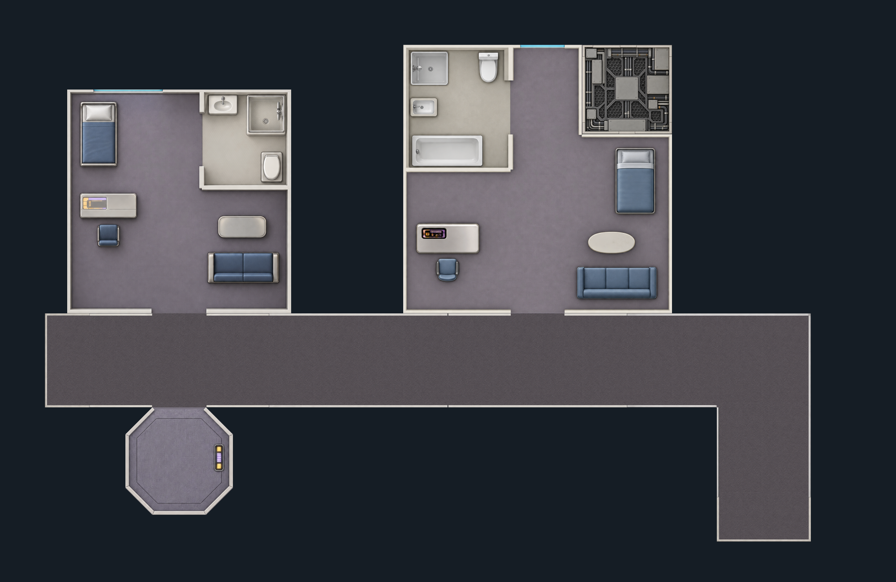

STARFLEET / TNG / MODULAR INTERIORS
The first habitation set
Nine pre-rendered artwork candidates: standard and L-shaped officer quarters with perimeter bathrooms, a compact inboard lift, five corridor pieces, and sealed structural infill.
Art review · connection fitting still in progress · not enabled in the scene generator
Teal = intended footprint · amber = connection opening
Fitted assembly
Smaller cabin furnishings, corrected corridor shapes, continuous corridor carpet, and separate open/closed doors. The art is clipped to the fixed room outlines at a uniform physical scale. This remains a fitting proof; room wall thickness and live Foundry behavior still need validation.

Compare the uncorrected placement
Hull side above; compact lift inboard below. Each image is positioned using one uniform scale, with no separate horizontal or vertical stretching. Remaining gaps and overlaps are visible. This is a fitting study, not a playable scene.
Individual artwork
Here the overlay uses the requested canvas framing without moving or stretching the artwork. Differences are visible on purpose. Click any image to inspect its original transparent PNG.
Smaller furnishings follow the guide more closely; perimeter shower bathroom and both door gaps retained. Wall thickness remains an art issue.
Fit details
Actual canvas: 1254 × 1254 px. Envelope aspect difference: 0.0%. This measures the outer bounds only, not door or furniture alignment.
Drawing guideOfficer quarters — L
L-shaped suite with separate tub/shower, smaller bed and open bathroom entrance. Exact furniture and wall clearances still need approval.
Fit details
Actual canvas: 1254 × 1254 px. Envelope aspect difference: 0.2%. This measures the outer bounds only, not door or furniture alignment.
Drawing guideSecond pass removes tall wall faces and lobby; doorway kept open. Wall thickness and outline still require calibration.
Fit details
Actual canvas: 1254 × 1254 px. Envelope aspect difference: 0.3%. This measures the outer bounds only, not door or furniture alignment.
Drawing guideDerived from the side-door corridor with its doorway closed; closer wall and carpet style. Requires exact seam checks.
Fit details
Actual canvas: 1254 × 1254 px. Envelope aspect difference: -1.6%. This measures the outer bounds only, not door or furniture alignment.
Drawing guideSingle north doorway and both open ends retained; thin edge fringe and wall thickness need cleanup.
Fit details
Actual canvas: 1254 × 1254 px. Envelope aspect difference: -1.1%. This measures the outer bounds only, not door or furniture alignment.
Drawing guideOpposed room doorways
Opposed doorways retained; thin edge fringe and wall thickness need cleanup.
Fit details
Actual canvas: 1254 × 1254 px. Envelope aspect difference: 0.7%. This measures the outer bounds only, not door or furniture alignment.
Drawing guideSquare envelope restored with thin wall caps; connection positions and edge fringes still require checking.
Fit details
Actual canvas: 1254 × 1254 px. Envelope aspect difference: 0.0%. This measures the outer bounds only, not door or furniture alignment.
Drawing guideCorrected shallow proportions and thinner walls; the open top floor edge is slightly recessed.
Fit details
Actual canvas: 1254 × 1254 px. Envelope aspect difference: 1.2%. This measures the outer bounds only, not door or furniture alignment.
Drawing guideStructural notch infill
Sealed mechanical infill with no walkable space; needs registration to the officer suite notch.
Fit details
Actual canvas: 1254 × 1254 px. Envelope aspect difference: 0.9%. This measures the outer bounds only, not door or furniture alignment.
Drawing guide